Intraoral Anatomy Review
PDF pages 1–23. The OSCE will hand you periapicals (PAs) and occlusals with arrows on radiolucencies and radiopacities and ask you to name the structure. Master the maxillary anterior → posterior → mandibular sweep. Memorize the “trick” mimics: cervical burnout, nutrient canals, lateral fossa.
1.1 · Opening Anatomy Quiz
Slides 1–4 · Three classic mimics that appear on every radiology OSCE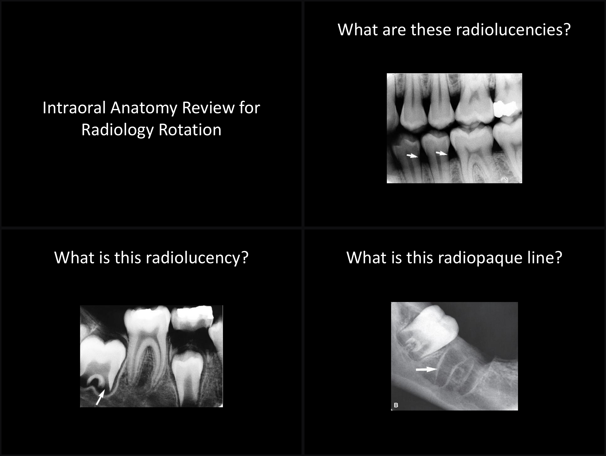
- Top-Right (radiolucencies on bicuspids) → Cervical burnout Anatomy / Optical artifact. The cervical region has thin enamel ending at the CEJ with no overlying enamel cap and only thin root dentin against alveolar bone — differential x-ray attenuation creates a triangular radiolucent band that mimics interproximal caries. Distinguishing feature: the radiolucency is uniform along the entire cervix, has no break in the enamel, and runs parallel to the CEJ. True Class II caries is a discrete notch below the contact, not a continuous band.
- Bottom-Left (rounded radiolucency at apex) → Dental papilla at the apex of the developing root of the erupting tooth. The papilla is the radiolucent ectomesenchymal core inside the developing tooth that gives rise to pulp and dentin; on a PA it appears as a well-defined rounded radiolucency at the apex of an immature root, bounded by the corticated bony crypt wall (the dental crypt). Not a periapical lesion. Sister landmarks — the dental follicle is the radiolucent sac surrounding the crown of an unerupted tooth, and the dental crypt is the surrounding bony cavity (its corticated wall is what you see).
- Bottom-Right (diagonal radiopaque line) → External oblique ridge. The external oblique ridge is the inferior continuation of the anterior border of the ascending ramus, running anteroinferiorly along the buccal cortex of the mandibular molars. On a PA it superimposes on the third-molar root as a thin radiopaque diagonal line. Do not confuse with the mylohyoid (internal oblique) ridge, which sits more apically/lingually.
1.2 · Maxillary Anterior Anatomy
Slides 5–8 · Midline structures: suture, nasal fossa, septum, anterior nasal spine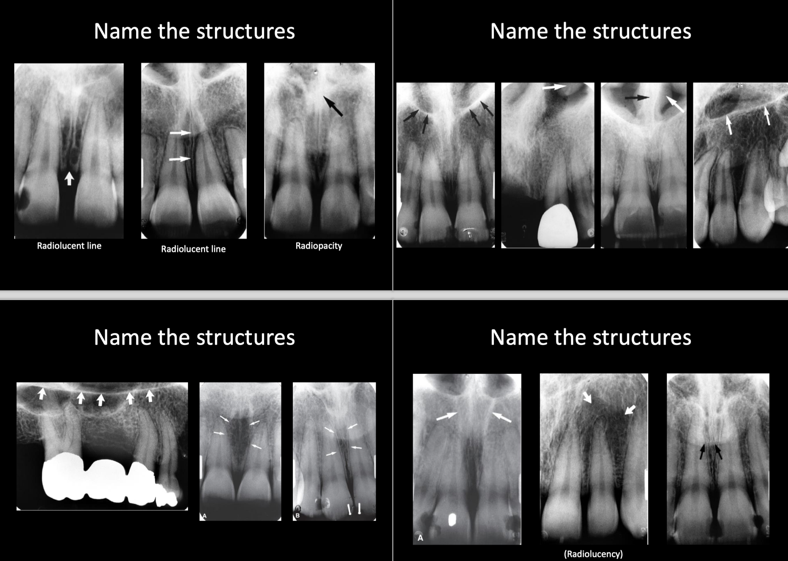
Top-Left Quad — Three labeled midline PAs
- Median palatine suture RL
- Median palatine suture RL
- Nasal septum RO
Top-Right Quad — Four maxillary anterior PAs with paired arrows
- Nasal fossae (R + L) RL
- Floor of nasal cavity RO
- Nasal septum + nasal floor RO
- Floor of nasal cavity RO
Bottom-Left Quad — Three more midline PAs
- Floor of nasal cavity RO
- Nasal septum RO
- Nasal septum (with adjacent nasal fossae) RO
Bottom-Right Quad — Three more anterior PAs
- Nasal septum (with nasal fossae) RO + RL
- Floor of nasal cavity RO
- Anterior nasal spine RO · with upper lip soft-tissue shadow as the labeled radiolucency below
- Nasal cavity / fossa — large bilateral radiolucent ovals above central apices.
- Nasal septum — vertical radiopaque column splitting the fossae at midline.
- Floor of nasal cavity — thin radiopaque dome across the apical bone.
- Anterior nasal spine — sharp pyramidal radiopaque V at the inferior midline of the nasal aperture, projects between the centrals.
- Median palatine suture — thin vertical radiolucent line at the midline of the palate, between the central crowns.
1.3 · Incisive Foramen, Lateral Fossa, Inverted Y of Ennis
Slides 9–12 · Anterior-to-posterior transition: midline foramen, canine fossa, sinus/nasal junction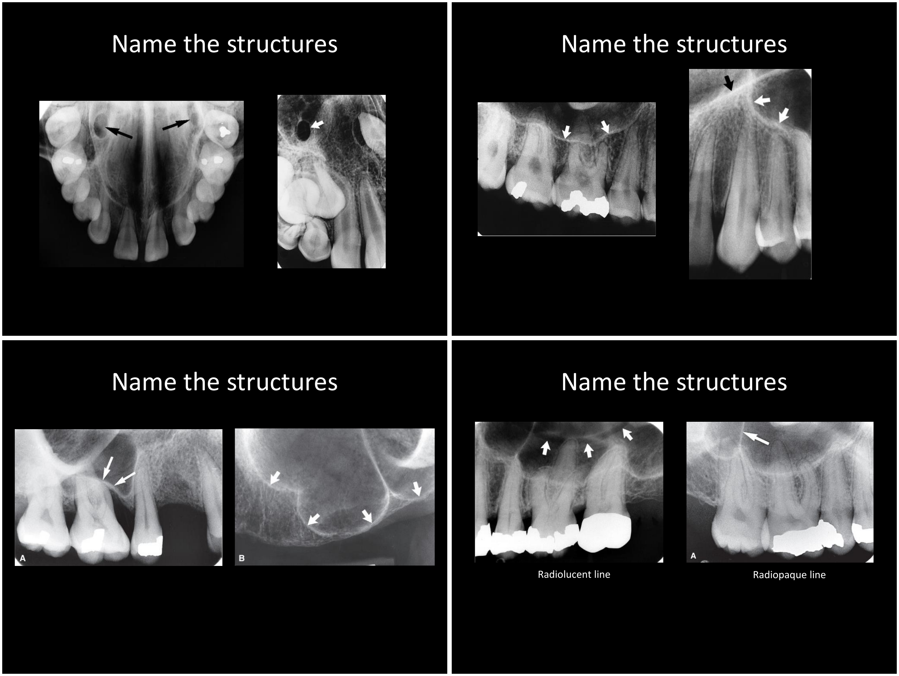
Top-Left Quad — Maxillary occlusal + PA
- Incisive foramen (palatal opening) RL
- Incisive foramen (PA projection) RL
Top-Right Quad — Two more PAs
- Incisive foramen RL
- Lateral fossa (canine fossa) RL
Bottom-Left Quad — Inverted Y
- Inverted Y of Ennis (nasal floor + sinus floor junction) RO
- Inverted Y of Ennis RO
Bottom-Right Quad — Maxillary sinus floor and nasal floor
- Maxillary sinus (airspace) RL
- Floor of the maxillary sinus RO
1.4 · Maxillary Posterior — Sinus, Zygoma, Tuberosity
Slides 13–16 · Sinus floor, septa, zygomatic process, posterior superior alveolar canals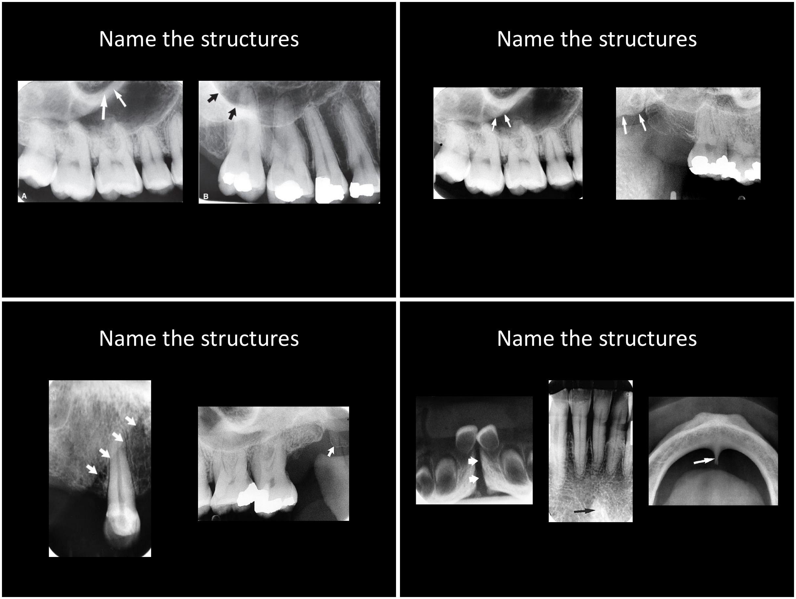
Top-Left Quad — Zygomatic process
- Zygomatic process of the maxilla RO
- Zygomatic process of the maxilla RO
Top-Right Quad — Sinus floor and recess
- Floor of the maxillary sinus (with interradicular recess) RO
- Floor of the maxillary sinus RO
Bottom-Left Quad — Sinus septa and lateral wall
- Maxillary sinus septum (Underwood) RO
- Lateral wall of the maxillary sinus RO
Bottom-Right Quad — Nutrient canals
- Posterior superior alveolar nutrient canals RL
- Cortical wall of nutrient canal / sinus floor RO
- Zygomatic process of maxilla — J/U-shaped radiopacity over first molar.
- Maxillary sinus floor — thin radiopaque cortex above molar apices, often dips between roots.
- Sinus septa (Underwood) — linear radiopacities crossing the antrum.
- Lateral wall of sinus — radiopaque vertical border on distal aspect.
- Nutrient canals (PSA) — thin radiolucent vertical lines in alveolar bone.
- Maxillary tuberosity — rounded radiopaque convexity distal to last molar.
1.5 · Mandibular Anterior — Mental Ridge, Lingual Foramen, Genial Tubercles, Mental Foramen
Slides 17–20 · Midline radiopaque tubercles, lingual foramen, mental foramen at bicuspids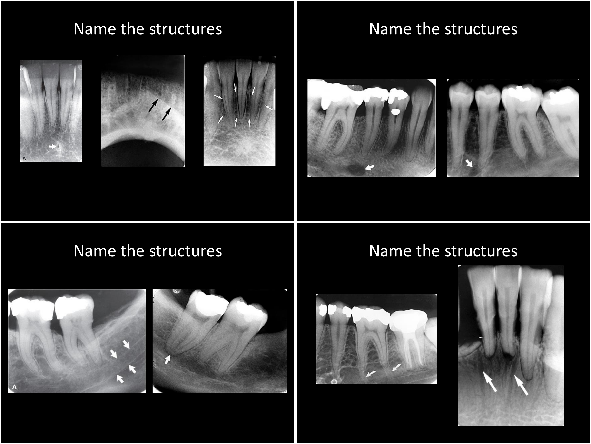
Top-Left Quad
- Submandibular fossa RL
- Lingual foramen + genial tubercles RL + RO
Top-Right Quad
- Mental ridge RO
- Mental ridge RO
Bottom-Left Quad
- Lingual foramen + genial tubercles RL + RO
- Lingual foramen + genial tubercles RL + RO
Bottom-Right Quad — Mental foramen + lingual foramen on occlusal
- Mental foramen RL
- Lingual foramen RL
- Lingual foramen (occlusal view) RL
1.6 · Mandibular Posterior — Mylohyoid Ridge, Submandibular Fossa, External Oblique Ridge, IAN Canal
Slides 21–23 · The two oblique ridges, the gland fossa, the inferior alveolar canal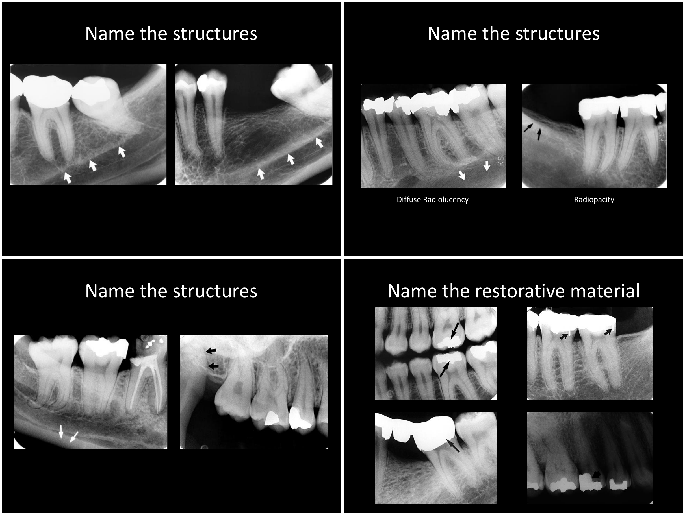
Top-Left Quad — Mylohyoid + external oblique ridges
- Mylohyoid ridge (internal oblique) RO
- External oblique ridge RO
Top-Right Quad — Submandibular fossa + mylohyoid ridge labeled
- Submandibular fossa RL
- Mylohyoid ridge / external oblique ridge RO
Bottom-Left Quad — Inferior border + maxillary tuberosity
- Inferior border of the mandible (± inferior alveolar canal) RO
- Maxillary tuberosity (± pterygoid hamulus) RO
Bottom-Right Quad — Restorative material (transition to Section 2)
This last quad is the first restorative-material question of the lecture — covered in detail in Section 2. Quick answer: all four images show amalgam restorations (most radiopaque material commonly used in posterior teeth, near-white appearance with sharp borders).
- External oblique ridge — thin radiopaque line, BUCCAL cortex, runs anteroinferiorly from anterior ramus over molars. Higher position on PA.
- Mylohyoid (internal oblique) ridge — thicker radiopaque line, LINGUAL cortex, runs along the molar apex level. Lower position than external oblique.
- Submandibular fossa — broad diffuse radiolucency below the mylohyoid line in the molar region.
- Inferior alveolar canal — paired thin radiopaque cortical lines running through cancellous bone, terminates at mental foramen.
- Inferior border of mandible — thick continuous radiopaque cortex.
- Mental foramen — round/oval radiolucency at second bicuspid apex.
2. Restorative Materials & Their Radiographic Appearance
All restorative materials, endodontic fillings, orthodontic hardware, and metallic appliances appear radiopaque — the question on the exam is always which material it is. Density on film correlates with atomic number: metals (amalgam, gold, stainless steel) are bright pure-white; ceramics and composites are intermediate gray-white; gutta percha and sealers fall between metal and tooth structure. Knowing the shape, location, and density of each material is enough to identify it cold.
2.1 The Restorative Materials Quad — Final Answers
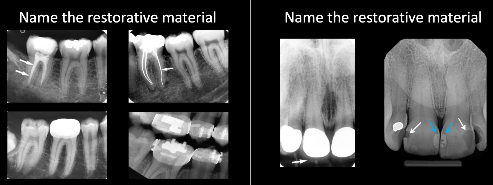
Top-Left — Endodontic obturation
Two posterior teeth with bright radiopaque cone-shaped fillings tracing the entire length of each canal, terminating at or just short of the radiographic apex. The material is denser than dentin but less dense than metal.
Final answer: Gutta percha (with sealer cement). RO Classic post-RCT appearance — conical taper, follows canal anatomy, contained within the root.
Top-Right — Tooth-colored direct restoration
Class II box-form restoration on a posterior tooth. The material has a moderate radiopacity — clearly distinguishable from tooth structure but distinctly less bright than amalgam. Margins are smooth and follow the cavity prep outline.
Final answer: Composite resin. RO Modern composites are made radiopaque by adding barium, strontium, or zirconium fillers so they can be distinguished from recurrent caries. Density is intentionally between dentin and amalgam.
Bottom-Left — Full-coverage crown
Crown with a uniformly bright, completely radiopaque outline covering the entire clinical crown. No internal anatomy visible — the metal completely attenuates the X-ray beam, leaving a solid white cap. Margins are sharp.
Final answer: Full gold crown (or full-metal crown). RO If you see a porcelain layer (slightly less radiopaque shoulder/facial veneer) over an opaque metal core → PFM crown. Pure all-ceramic crowns (zirconia, e.max) are also radiopaque but more uniform and slightly less bright than metal.
Bottom-Right — Orthodontic appliances
Multiple bright radiopaque rectangular structures bonded to the facial surfaces of multiple teeth, with a thin radiopaque wire passing through them.
Final answer: Orthodontic brackets and archwire (stainless steel). RO Brackets show the characteristic "tie-wing" silhouette superimposed over the crown.
- Metals (amalgam, gold, stainless steel orthodontic appliances, posts, implants) — brightest pure-white, no internal detail visible
- Gutta percha + sealer — bright but conforms to canal shape, conical taper
- All-ceramic crowns / porcelain — uniformly radiopaque but slightly less than metal; smooth crown contour
- Composite resin (modern radiopaque) — clearly distinguishable from dentin but visibly less dense than metal
- Glass ionomer / RMGI — close to dentin density, sometimes hard to distinguish from tooth (look for cavity outline)
- Older / non-radiopaque composites and acrylic temporaries — can appear radiolucent and mimic caries (now rare with modern materials)
- Amalgam — bright white, sharp irregular margins, often with overhangs or condensation marks. Class I/II/V locations.
- Gold inlay/onlay/crown — uniformly bright with smooth machined margins. Often partial-coverage with cusps preserved.
- PFM crown — opaque metal core (lingual/cervical) with a slightly less opaque facial porcelain veneer. Margin is metal → very sharp.
- All-ceramic / zirconia crown — uniformly radiopaque, no metal core, margins follow prep.
- Composite — intermediate gray-white, conforms to bonded prep outline.
- Gutta percha — canal-shaped radiopacity tapering to apex.
- Endodontic post — metallic post (very bright) extending into canal beyond crown.
- Implant — threaded screw radiopacity in alveolar bone with abutment/crown above.
- Orthodontic brackets — rectangular metallic shape on facial of crown; archwire connects them.
- Composite vs caries — modern composites are radiopaque, but the contrast against dentin can still look like a faint Class II box. Confirm by checking if the outline matches a clean prep (smooth) vs caries (irregular, undermining enamel).
- Old composite vs caries — pre-1990s composites were truly radiolucent and indistinguishable from caries. If you see a radiolucent area in a tooth without a prep outline, assume caries unless history says otherwise.
- PFM vs full gold — both have an opaque core, but PFM has a less-opaque porcelain "cap" on the facial / occlusal. Full gold is uniformly bright everywhere.
- Sealer extrusion past the apex — small puff of radiopacity beyond the apex is sealer, not GP. Not pathologic unless symptomatic.
3. FMX & PA Technique — Errors and Corrections
Most exam image-ID questions in this block hinge on recognizing a technique error — cone cut, foreshortening, elongation, bite-block misalignment, or open bite on a BW. The fix in every case is a single concrete adjustment to either the PID alignment, the vertical angulation, or the bite-block position. Memorize the appearance + the fix together — the OSCE will ask both.
3.1 Cone Cuts — Lines, Notches, and Crescents
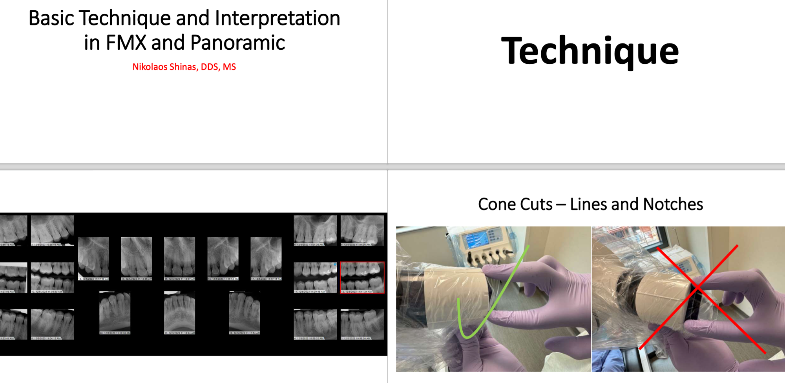
Top images — Clinical setup
Rectangular PID being aligned to a Rinn XCP holder. The collimated beam must completely cover the receptor; if any portion of the receptor sits outside the beam, that portion will record no X-rays and appear as a sharply demarcated unexposed (clear/white-on-film, opaque-on-digital) region.
Bottom-left — Straight-line cone cut
The arrow points to a sharp, straight, perfectly linear unexposed border running along one edge of the image. The film/sensor was partially outside the collimated rectangular beam.
Final answer: Cone cut from a rectangular PID. The straight edge proves the collimator was rectangular. Fix: re-align the PID so the rectangular beam fully encompasses the receptor (use the XCP aiming ring; tip the PID toward the missed side).
Bottom-right — Curved/crescent cone cut
The arrow points to a curved, arc-shaped unexposed margin. This is the same artifact but produced by a round (circular) PID — the missed corner of the rectangular sensor reveals the curve of the round beam.
Final answer: Cone cut from a round PID. The crescent shape proves the collimator was round. Fix: re-aim the PID so the entire receptor sits inside the round beam.
- Straight-line unexposed edge → cone cut, rectangular PID.
- Curved/crescent unexposed edge → cone cut, round PID.
- Cause: misalignment of the X-ray beam with the receptor — part of the receptor was outside the primary beam.
- Correction: realign the PID so the central ray is centered on the receptor and the beam fully covers it. Always use a beam-aiming device (XCP ring) to prevent.
3.2 Foreshortening — Steep Vertical Angle
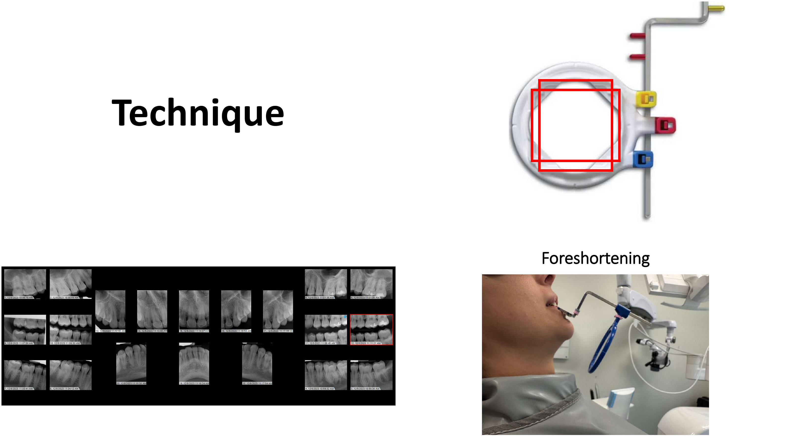
Bottom-left — Clinical positioning
The PID is angled too steeply (excessive positive vertical angulation) — the central ray is nearly perpendicular to the long axis of the receptor but is hitting the long axis of the teeth at an oblique angle.
Bottom-right — Foreshortened image
The arrow points to shortened, "stubby" roots — crowns appear normal but the roots look truncated. Apices are not where you expect them to be.
Final answer: Foreshortening caused by excessive vertical angulation (PID angled too steeply). The image of the tooth is shorter than the actual tooth because the long axis of the tooth and the receptor are not parallel and the beam is more perpendicular to the receptor than to the tooth.
- Appearance: teeth (especially roots) appear shorter than they really are; apices look truncated.
- Cause: excessive vertical angulation — the PID is too steep; the central ray strikes the receptor more perpendicularly than the teeth.
- Correction: decrease the vertical angle. Use the paralleling technique with an XCP — align the PID parallel to the long axis of the tooth so the bisecting angle is correct.
3.3 Bite-block Positioning — Correct vs Incorrect Placement
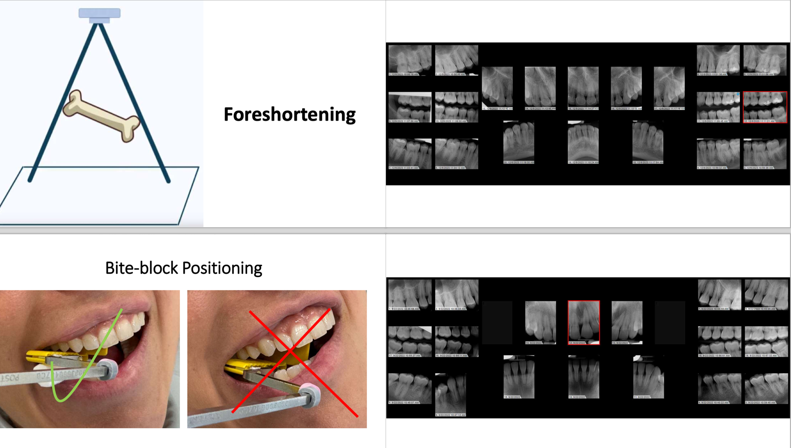
Top images — Correct paralleling technique
Bite-block holds the receptor parallel to the long axis of the tooth; the PID is then aligned perpendicular to both the receptor and the tooth's long axis. This is the paralleling technique — produces the most geometrically accurate image with no shortening or elongation.
Bottom images — Bite-block too far forward / not far enough back
The arrow points to teeth that are cut off at the apex or distal edge — the receptor was not positioned far enough lingually or posteriorly to capture the apices.
Final answer: Bite-block positioned incorrectly — receptor placed too far forward (anteriorly) or not far enough into the palate/floor of mouth. Fix: reposition the bite-block so the receptor sits further lingually and posteriorly; the patient's tongue/palate must accommodate the full sensor depth so the beam can capture the apices and 2-3 mm of periapical bone.
- Sign: apices cut off or insufficient periapical bone visible.
- Cause: bite-block placed too anteriorly / too close to the teeth; receptor not deep enough into the oral cavity.
- Correction: place the bite-block more posteriorly with the receptor pushed further into the palate (maxillary) or floor of mouth (mandibular). Patient bites firmly — instruct tongue to rest under the receptor.
3.4 Midline of the Bite-block & Open Bite on Bitewings
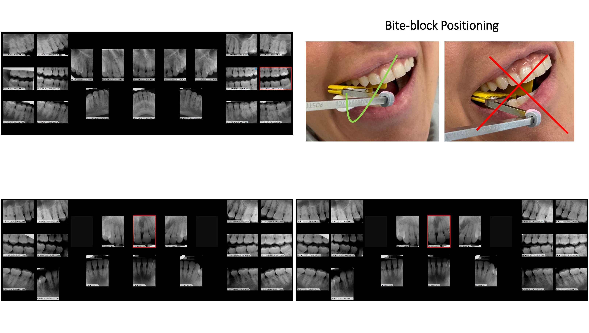
Top images — Midline of the bite-block
The arrow points to a thin horizontal radiopaque line running across the image at the level where the patient bit on the bite-block tab. This is the bite-block tab itself superimposed on the receptor.
Final answer: Midline / occlusal plane of the bite-block. Not an error per se — it is normal to see a faint outline of the tab, but it should not obscure the teeth of interest. If the tab outline is over the apices or interproximal contacts, the bite-block is positioned at the wrong angle and the receptor needs to be repositioned.
Bottom images — Open bite on bitewings
The arrows point to the occlusal plane sitting too high on the image — not aligned with the central horizontal axis of the bitewing. There is uneven coverage of maxillary vs mandibular crowns; one arch is over-represented and the other is cut off.
Final answer: Patient was not biting fully closed on the bitewing tab — "open bite" technique error. The maxillary and mandibular crowns are not aligned across the central plane of the image.
Fix: reposition the bitewing tab and instruct the patient to close fully and firmly into maximum intercuspation on the tab. Confirm by visualizing the occlusal plane runs through the horizontal center of the receptor before exposing.
- Bite-block midline — thin radiopaque horizontal line on a PA from the bite-block tab. Acceptable unless it obscures critical anatomy.
- Open bite on BW — occlusal plane is off-center; one arch over-represented. Patient was not in full occlusion.
- Fix for open bite: have the patient bite fully closed on the BW tab; verify occlusal plane is centered before exposure.
3.5 Elongation — Insufficient Vertical Angle
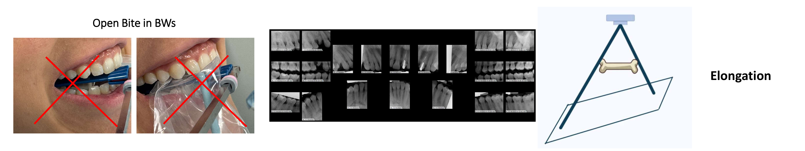
Image — Elongated teeth
The arrows point to teeth that look stretched and abnormally long — opposite of foreshortening. Crowns and roots both appear elongated; apices are projected far beyond their true position.
Final answer: Elongation caused by insufficient vertical angulation (PID too flat / not steep enough). The central ray is more perpendicular to the long axis of the tooth than to the receptor, projecting the tooth's image longer than it really is.
- Appearance: teeth appear longer than they actually are — roots stretched.
- Cause: insufficient vertical angulation (PID too flat).
- Correction: increase the vertical angle; use paralleling technique with XCP so PID is perpendicular to a receptor that is parallel to the tooth.
- Steep beam → Short teeth → Foreshortening (decrease angle)
- Flat beam → Long teeth → Elongation (increase angle)
- Both fixed by paralleling technique with XCP
4. Panoramic Technique & Positioning Errors
A correctly positioned pan = teeth in the focal trough, occlusal plane gently V’d (slight smile), midsagittal plane vertical, Frankfort plane parallel to floor, tongue on palate, lead apron clear of the beam path. Each error has a signature distortion on the resulting radiograph — learn the pattern, name the error.
4A. Sensor Sliding & Pano Setup
Technique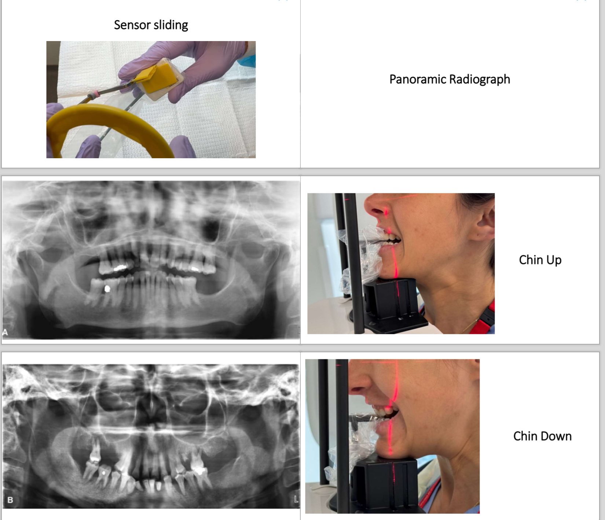
Final answers (these two slides together):
- Sensor sliding photo → Pre-exposure setup. Cassette is loaded into the rotating arm. Not an error.
- Chin Up pano → “Frowning / flat occlusal plane” error. Frankfort plane was tipped above horizontal. Positioning Error
- Chin Down pano → “Exaggerated smile” error. Frankfort plane tipped below horizontal. Positioning Error
The 5-error mnemonic: Chin Up → frown. Chin Down → over-smile. Slumping → cervical spine ghost in midline. Head tilt → occlusal plane cants. Head rotation → one side magnified, the other shrunk.
4B. Slumping, Tilt & Rotation Errors
Technique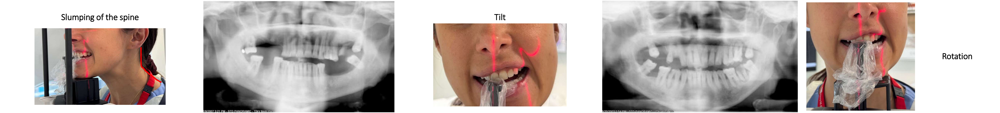
Final answers:
- Top pano → Slumping of the cervical spine (patient leaned forward / didn’t stand erect). Fix: have patient stand tall, “pretend a string is pulling the top of your head up.” Positioning Error
- Middle pano → Head tilt (midsagittal plane not vertical). Fix: re-align midsagittal plane vertically; use the laser midline guide. Positioning Error
- Bottom pano → Head rotation (patient turned head to one side). Fix: re-center patient so canine laser line bisects both canines; chin rest, forehead rest, and bite block all engaged. Positioning Error
Tilt vs Rotation — do not confuse:
- Tilt = head dropped toward a shoulder → vertical asymmetry (occlusal plane cants). Both sides of the arch are still roughly the same width.
- Rotation = head turned around the vertical axis → horizontal asymmetry (one ramus wider/blurry, the other narrow/sharp). Occlusal plane stays roughly level.
Why slumping makes a midline shadow: When the patient leans forward, the cervical vertebrae (C2–C4) move into the focal trough at the midline. The pan machine smears them across the anterior teeth as a wedge of opacity — classically described as a triangular radiopacity in the midline of the anterior mandible or maxilla.
5. Interpretation — Charting from Radiographs
Before pano anatomy, the lecture pivots through a short interpretation block: how to read carious lesions, measure bone loss, and chart findings on an odontogram. The OSCE expectation is to look at a radiograph and produce a charted finding by tooth number — not just “there’s caries somewhere.”
5A. Interpretation Opener & Odontograms
Interpretation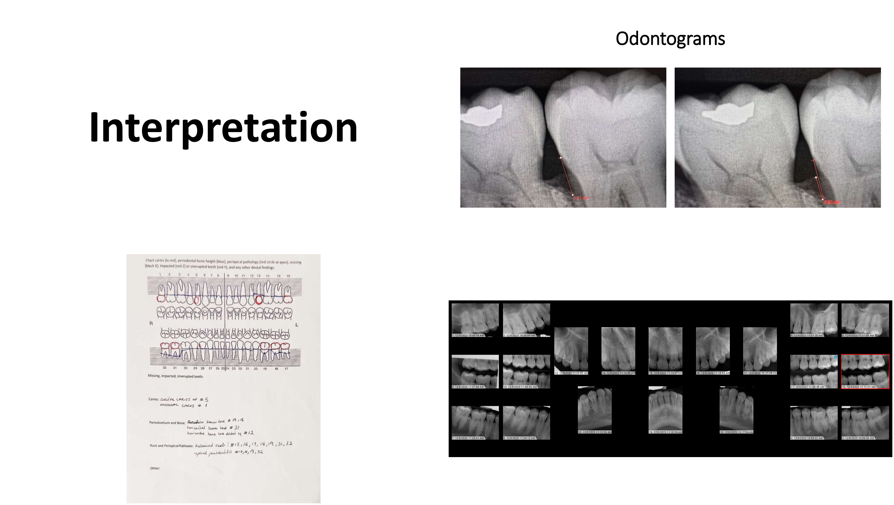
• Caries: Distal #5, Occlusal #1
• Furcation involvement (BL): #19, #18
• Horizontal bone loss: Mand BL #31, distal #12
• Retained roots: #13, #16, #17, #18, #19, #31, #32
• Apical periodontitis: #17, #18, #19, #32
Final charted answers (memorize these — they show up verbatim):
- Caries: Distal #5, Occlusal #1
- Furcation involvement (buccal/lingual): #18, #19
- Horizontal bone loss: Mandibular BL #31, Distal #12
- Retained roots: #13, #16, #17, #18, #19, #31, #32
- Apical periodontitis (PARL): #17, #18, #19, #32
How to chart a finding cleanly: name the tooth number, then the surface or location, then the finding (e.g., “#19, mesial, recurrent caries under amalgam”). The OSCE grader is looking for that triplet, not flowery prose.
5B. FMX Charting Worked Example & Pano Trio
Interpretation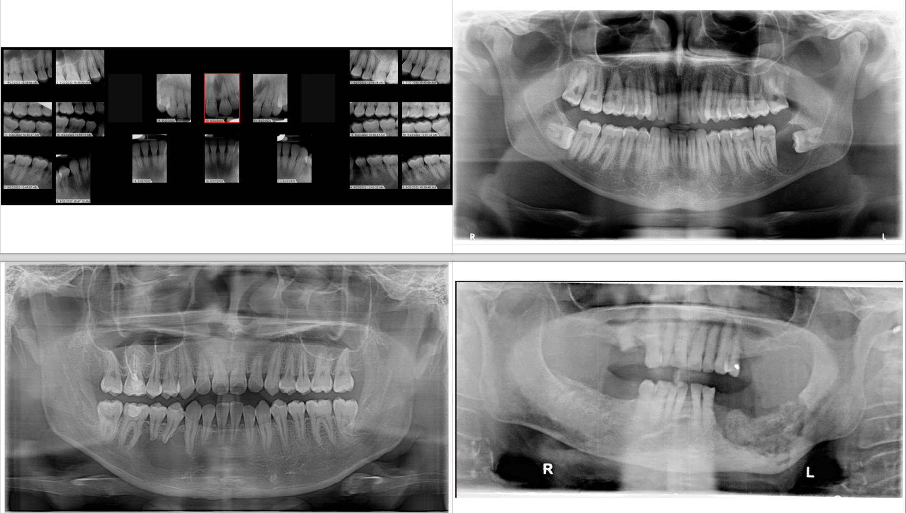
Charting workflow on a pan or FMX:
- Confirm orientation (R/L marker, restoration pattern, or asymmetric anatomy).
- Number teeth using FDI (international 11–48) or Universal (1–32) — this OSCE uses FDI.
- For each abnormal finding, write: tooth #, surface, finding.
- Cross-check with the odontogram template provided in the exam booklet.
Universal vs FDI: The mounted FMX in the slide is labeled in Universal (#1–32) but the labeled pano on the next slide uses FDI (11–48). The OSCE expects FDI — always default to FDI unless told otherwise.
6. Panoramic Anatomy — Hard Tissue, Soft Tissue, Airway
The single biggest block of this OSCE. The lecture cycles through the same baseline pano over and over, each time arrowing or circling a different anatomic landmark. The exam will do the same: arrow on the pano, name the structure. Below, every labeled structure from the lecture, in the order it appears, with the arrow location described in bold.
6A. Skull Bones Reference (Cranial & Facial)
Anatomy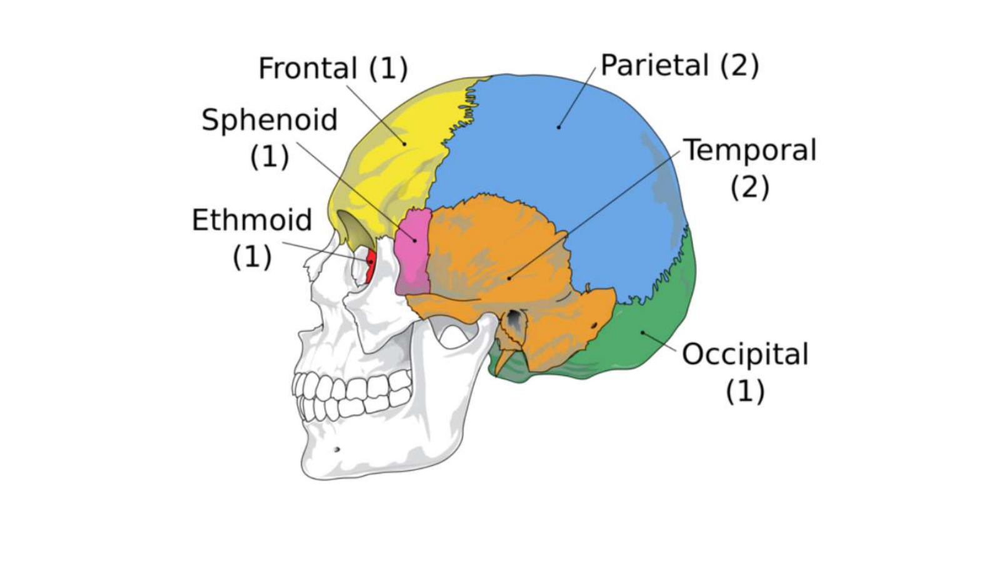
Cranial bones (8 total):
- Frontal (1) — yellow, forehead and superior orbital roof.
- Parietal (2) — blue, top and sides of the cranial vault.
- Sphenoid (1) — pink/yellow centrally, butterfly-shaped, articulates with all other cranial bones.
- Ethmoid (1) — pink, between the orbits behind the nose.
- Temporal (2) — orange, houses ear and forms part of the TMJ (glenoid fossa).
- Occipital (1) — green, posterior cranium with foramen magnum.
Memory: “PEST OF 6” → Parietal, Ethmoid, Sphenoid, Temporal, Occipital, Frontal.
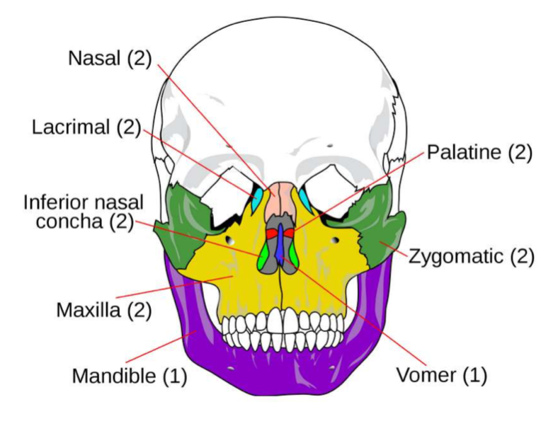
Facial bones (14 total):
- Nasal (2) — bridge of the nose.
- Lacrimal (2) — cyan, smallest facial bones; medial orbital wall.
- Inferior nasal concha (2) — green, lateral nasal cavity.
- Maxilla (2) — yellow, upper jaw and most of the midface.
- Mandible (1) — purple, only mobile facial bone.
- Palatine (2) — small, posterior hard palate.
- Zygomatic (2) — green, cheek bones.
- Vomer (1) — midline bony nasal septum, inferior portion.
Memory: “Virgil Can Make My Pet Zebra Laugh Now” → Vomer, Concha (inf. nasal), Maxilla, Mandible, Palatine, Zygomatic, Lacrimal, Nasal.
OSCE-style question: “How many cranial bones?” → 8. “How many facial bones?” → 14. “Total bones in the skull?” → 22. The lone unpaired facial bones are mandible and vomer.
6B. FDI Tooth Numbering on Pano
Anatomy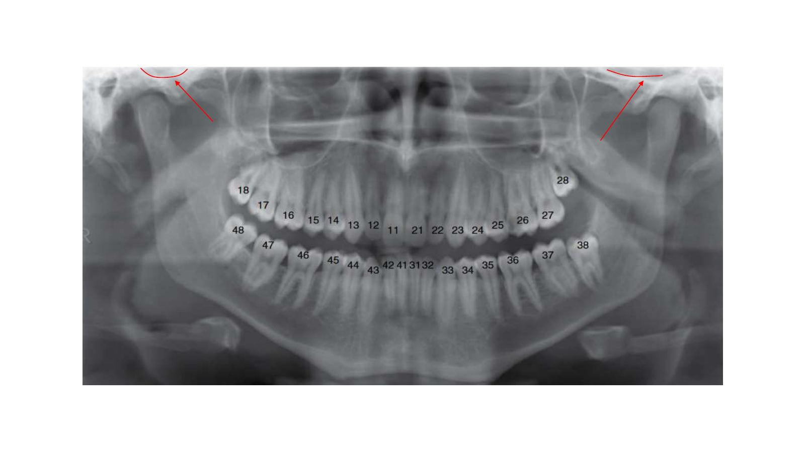
FDI numbering — how to read it:
- First digit = quadrant: 1 = max R, 2 = max L, 3 = mand L, 4 = mand R (clockwise from upper right, viewer’s perspective).
- Second digit = tooth position from midline: 1 = central incisor → 8 = third molar.
- Examples: 11 = max R central; 26 = max L 1st molar; 38 = mand L 3rd molar; 47 = mand R 2nd molar.
Arrowed structure (both upper corners): Articular eminence of the temporal bone — the convex bony prominence anterior to the glenoid fossa that the condyle translates over during opening. Anatomy
Why FDI: WHO/international standard, language-independent, and unambiguous in writing (“36” can’t be confused with anything else). The Universal system uses 1–32 with no quadrant prefix and is US-specific.
6C. Baseline Pano Reference Frames
Anatomy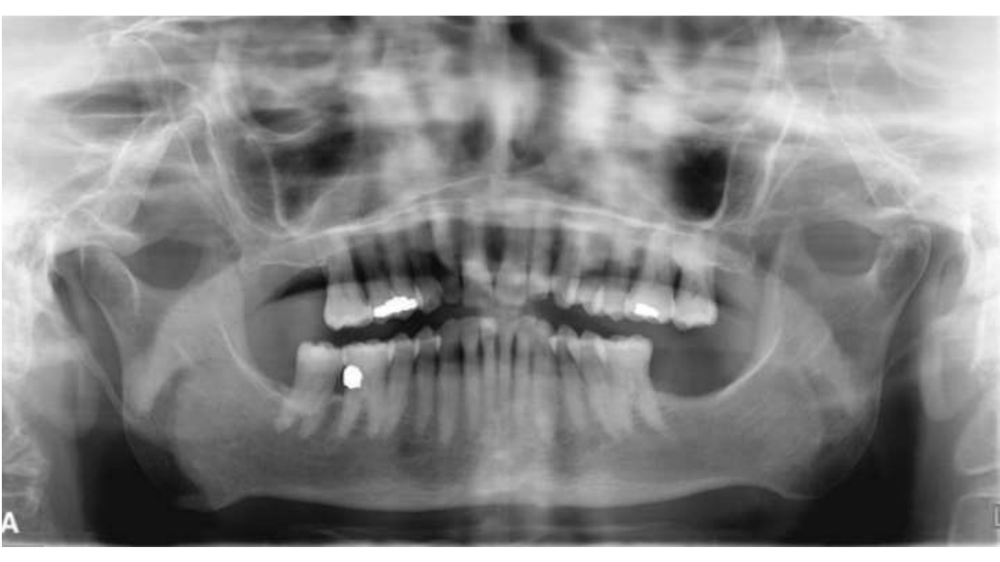
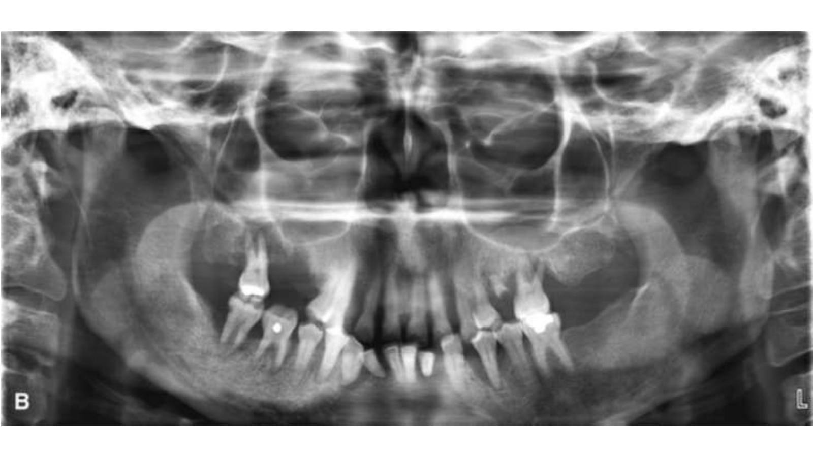

Baseline anatomy mental checklist (memorize these landmarks on a clean pano before any arrows are added): condyles → coronoid → sigmoid notch → ramus → angle → mental foramen → mandibular canal → mental ridge / lingual foramen → hard palate → nasal septum → ANS → maxillary sinuses → zygomatic arch → pterygoid plates → styloid process → mastoid → articular eminence/glenoid fossa.
6D. TMJ Region — Articular Eminence, Glenoid Fossa, Condyle
Anatomy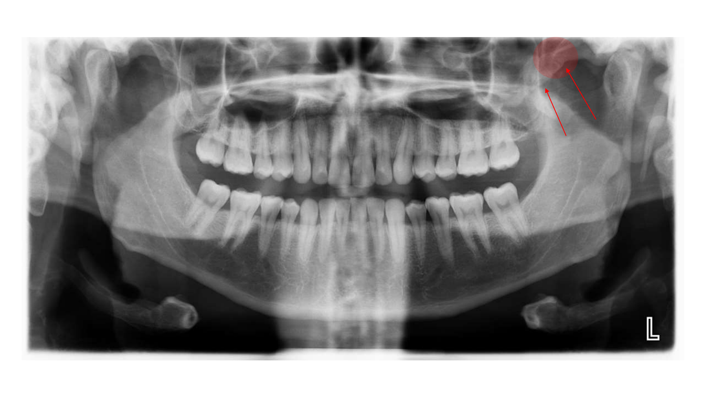
Answer: Articular eminence (of the temporal bone). Convex bony prominence anterior to glenoid fossa — condyle slides forward and downward over it during translation.

Answer: Glenoid fossa + articular eminence complex — the concave depression (fossa) of the temporal bone that houses the condyle, with the convex eminence immediately anterior. Together they form the bony socket of the TMJ.
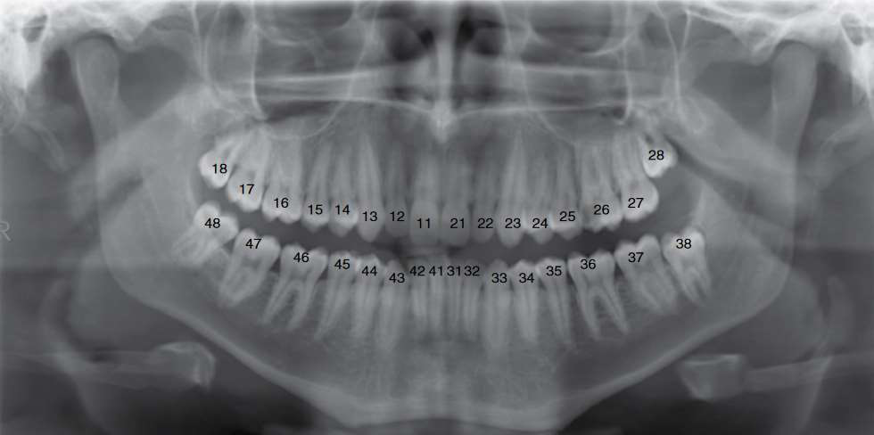
Answer: Mandibular condyle — superior articular surface of the mandible, articulates with the glenoid fossa to form the TMJ. Has a head, neck, and is anterior to the ear canal.

Answer: Glenoid fossa (mandibular fossa) of the temporal bone — the concave socket that houses the condyle. Forms the “upper” half of the TMJ.
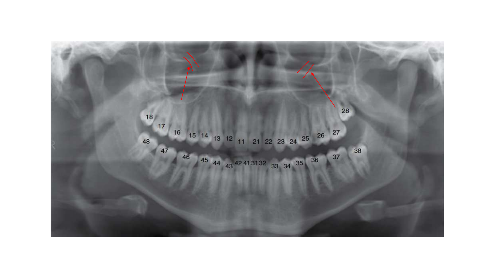
Answer: Coronoid process of the mandible — the anterior, sharp, beak-like projection of the ramus. Site of attachment for the temporalis muscle. On a pan it often projects upward into the maxillary sinus / tuberosity area as a triangular radiopacity with a sharp tip.

Answer: Mastoid process of the temporal bone — bony prominence behind the ear, attachment for sternocleidomastoid. Appears as dense radiopaque bone in the far lateral upper corners of the pano.
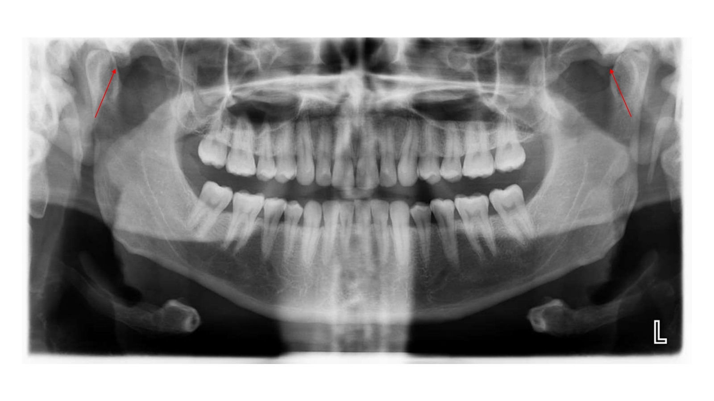
Answer: Styloid process of the temporal bone — thin, pointed bone projecting inferiorly from the skull base. Attachment for stylohyoid, styloglossus, stylopharyngeus muscles. May appear elongated in Eagle syndrome.
6E. Cranial Base — Pterygoid Plates & Pterygomaxillary Fissure
Anatomy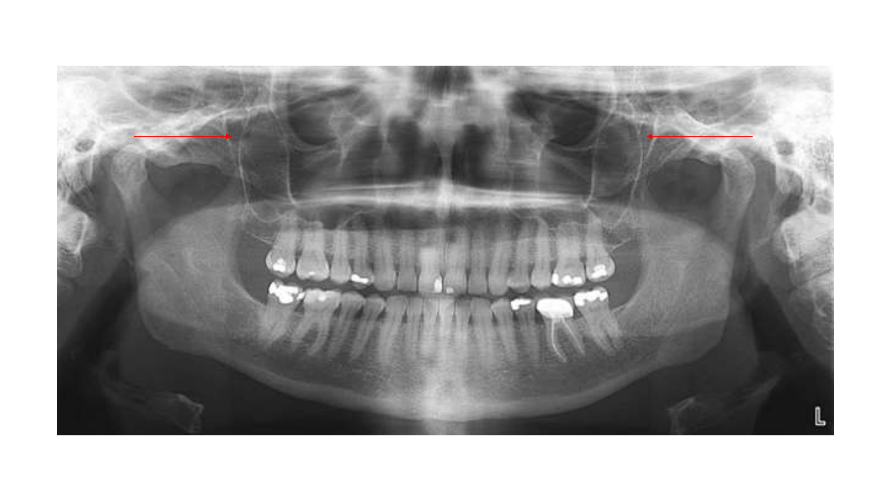
Answer: Pterygoid plates (lateral and medial) of the sphenoid bone — project inferiorly from the body of the sphenoid behind the maxillary tuberosity. Attachment for the medial and lateral pterygoid muscles. On a pan they appear as faint vertical radiopaque structures behind the maxillary tuberosity.
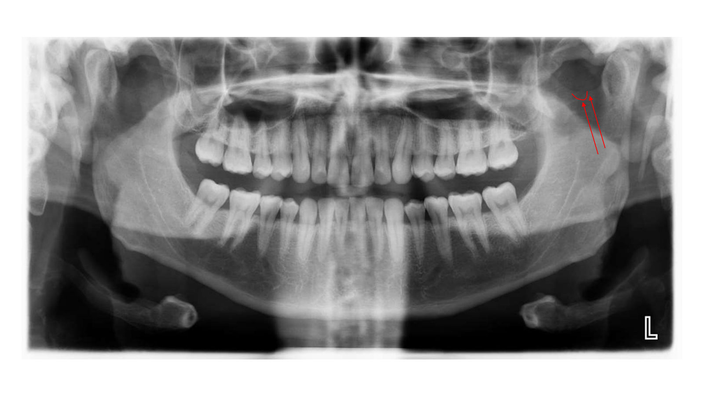
Answer: Pterygomaxillary fissure — the narrow vertical gap between the posterior wall of the maxilla and the anterior surface of the pterygoid process. Communicates with the pterygopalatine fossa. Classic teardrop-shaped radiolucency on a pan.
Don’t confuse with the maxillary sinus posterior wall: the pterygomaxillary fissure is an actual gap — thin, vertical, with bone on both sides. The sinus posterior wall is just a single corticated line.
6F. Zygomatic Complex & Orbital Rim
Anatomy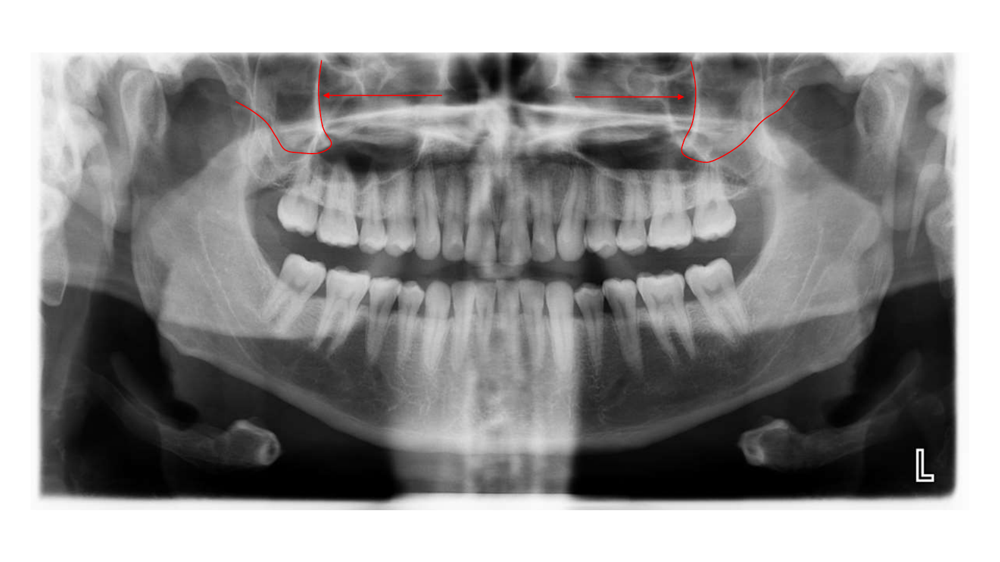
Answer: Zygomatic arch — horizontal bony bridge formed by the temporal process of the zygoma and the zygomatic process of the temporal bone. Attachment for masseter. On a pan it’s a long horizontal radiopaque band crossing the upper third of the image bilaterally.
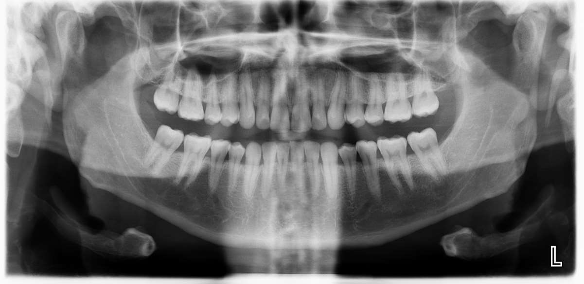
Answer: Zygomaticomaxillary suture (Z-line / J-line) — the suture between the zygomatic bone and the maxilla. Forms a J or hook-shaped radiopaque line at the junction of the maxillary tuberosity and zygomatic arch. One of the most reliable anatomic landmarks on a pan.

Answer: Inferior orbital rim / floor of the orbit — the U-shaped radiopaque rim at the bottom of each orbit, formed by the maxilla and zygoma. Often visible just superior to the maxillary sinus roof on a pan.
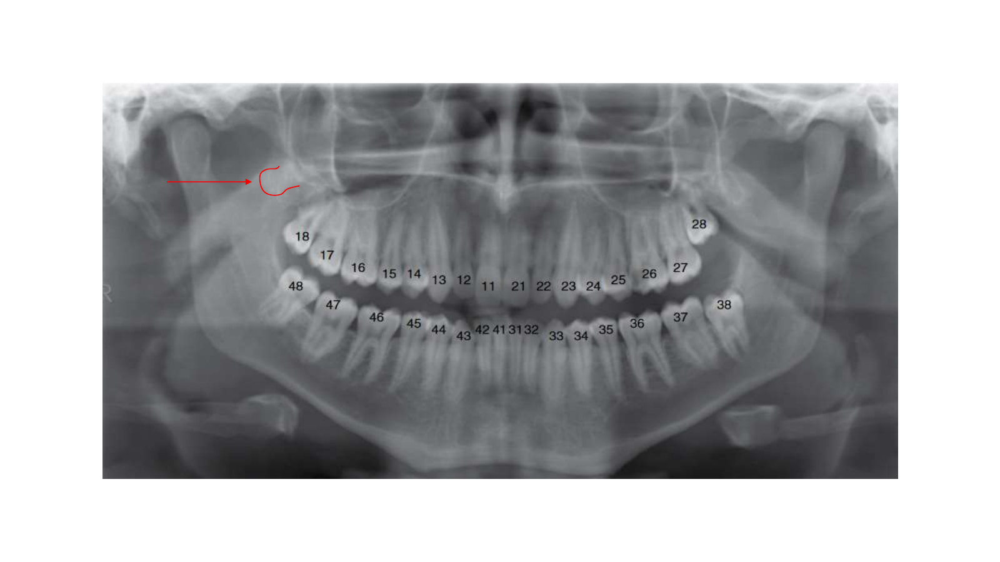
Answer: Zygomatic process of the maxilla (the “maxillary J-line” or “hook”) — U or J-shaped radiopaque structure superimposed over the maxillary first molar region. Marks where the lateral wall of the maxillary sinus joins the zygoma.
Do not confuse with the Inverted Y of Ennis (covered in Section 1.3), which is the crossing of the floor of the nasal cavity + floor of the maxillary sinus at the canine region, not the molar.
6G. Maxilla, Sinus & Hard Palate
Anatomy
Answer: Floor of the maxillary sinus — the inferior corticated boundary of the antrum, sitting just above (and sometimes draping between) the maxillary posterior root apices. The sinus itself is the large radiolucent area above this line.
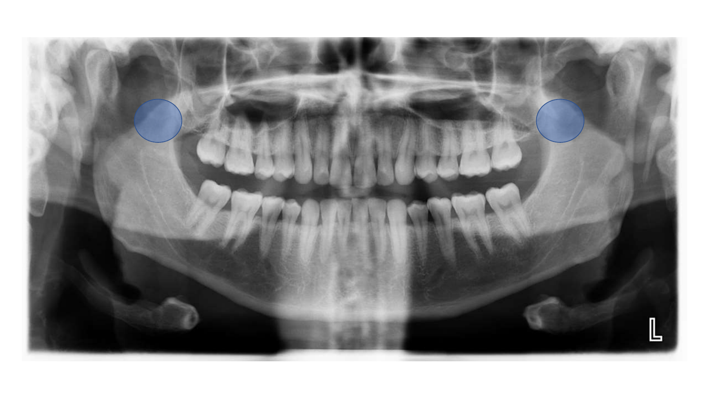
Answer: Maxillary tuberosity — the rounded posterior projection of the maxilla distal to the upper third molars. Important landmark for posterior superior alveolar nerve block and for upper denture flange extension.
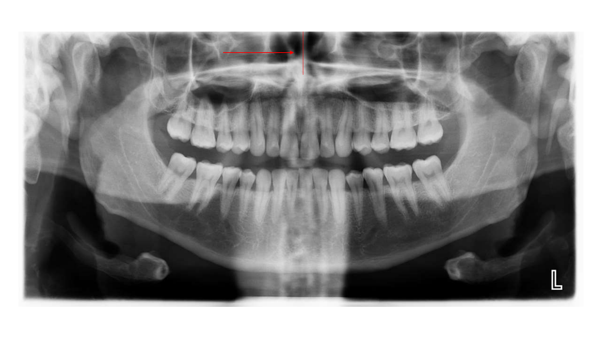
Answer: Hard palate (palatal process of the maxilla + horizontal plate of palatine bone) — appears as a thick horizontal radiopaque band crossing the upper pano just at/above the maxillary tooth apices due to the focal-trough geometry. If the band is projected too far down over the maxillary apices and obscures them, suspect a Chin Up positioning error (Frankfort plane angled upward thrusts the palate inferiorly into the apex zone).
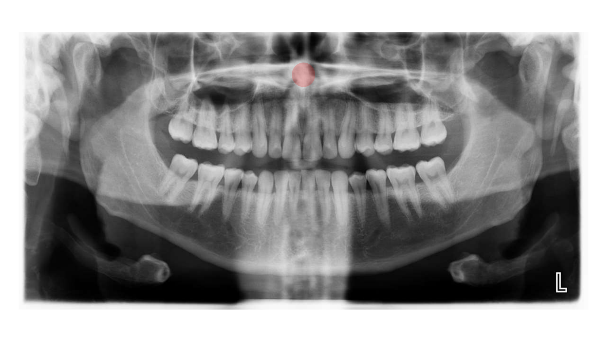
Answer: Anterior nasal spine (ANS) — small triangular radiopaque projection of the maxilla in the midline at the inferior border of the nasal aperture. Cephalometric landmark.

Answer: Nasal septum — vertical midline radiopaque wall dividing the right and left nasal cavities. Made of the perpendicular plate of the ethmoid (superior) and the vomer (inferior). Often deviated.

Answer: Inferior nasal concha (turbinate) — horizontally scrolling bony shelf on the lateral wall of the nasal cavity. Largest of the three turbinates. Pano often shows it as a curved radiopaque shelf inside the nasal aperture lateral to the septum.
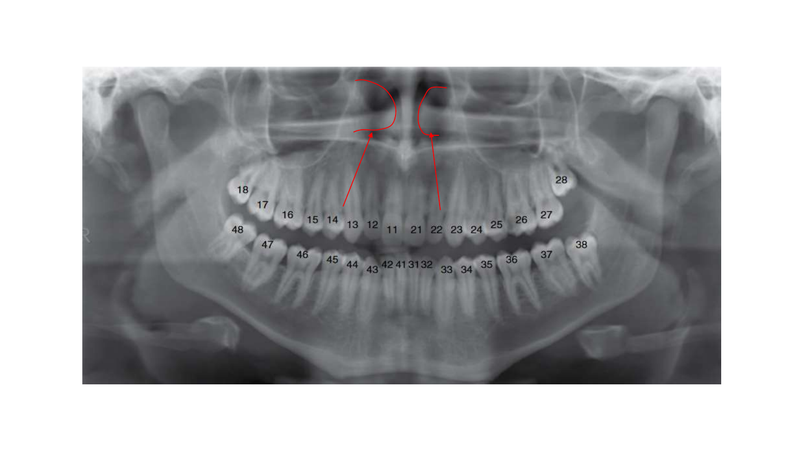
Answer: Incisive foramen (nasopalatine canal opening) — midline radiolucency between or just apical to the maxillary central incisor roots. Transmits the nasopalatine nerve and sphenopalatine artery. Commonly “heart-shaped.” Do not mistake for a periapical lesion — it’s anatomy.
6H. Mandible — Ramus, Oblique Ridges, Mental Foramen, IAN Canal
Anatomy
Answer: Ramus of the mandible — the vertical posterior portion of the mandible. Includes the angle (gonion) inferiorly, the condyle posterosuperiorly, and the coronoid anterosuperiorly, separated by the sigmoid (mandibular) notch.
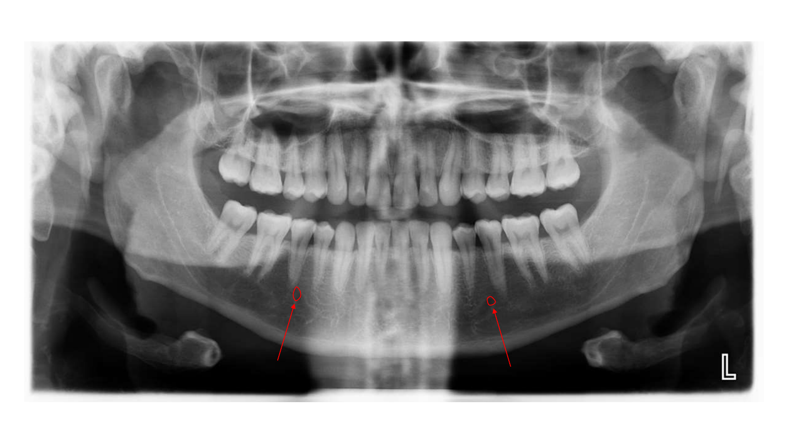
Answer: Internal oblique ridge (mylohyoid line) — ridge on the lingual surface of the mandible for mylohyoid muscle attachment. Runs from the ramus down to the molar region. On a pano, projects lower and more medial than the external oblique ridge.
Together with the external oblique ridge: the two appear as parallel radiopaque lines descending into the mandibular body — the upper/lateral one is external, the lower/medial one is internal (mylohyoid).

Answer: External oblique ridge — ridge on the buccal/lateral surface of the mandible, continuous with the anterior border of the ramus. Lateral and superior to the internal oblique ridge on a pan. Important landmark for mandibular block and for distal extension dentures.

Answer: Mental foramen — oval radiolucency typically between or apical to the mandibular premolars, where the mental nerve (terminal branch of IAN) exits the mandible. Common pitfall: can be mistaken for periapical pathology of #20 / #29 / #44 / #45 — check that the lamina dura is intact and the radiolucency is distinct from the apex.

Answer: Inferior alveolar (mandibular) canal / IAN canal — corticated tubular radiolucency containing the inferior alveolar nerve, artery, and vein. Travels from the mandibular foramen on the lingual ramus to the mental foramen. Critical landmark for implant planning and 3rd molar removal — proximity to root apices = paresthesia risk.
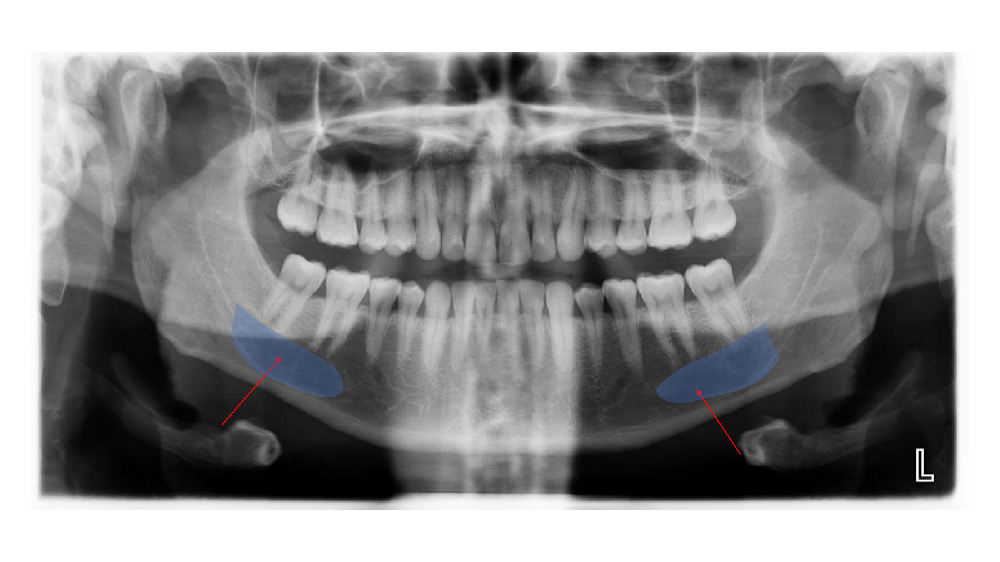
Answer: Submandibular fossa (gland fossa) — concavity on the lingual surface of the mandible below the mylohyoid line that houses the submandibular gland. The thinner bone here appears as a relative radiolucency on a pan. Implant pitfall: this lingual concavity is the classic site of inadvertent lingual cortical perforation during posterior mandibular implant placement.
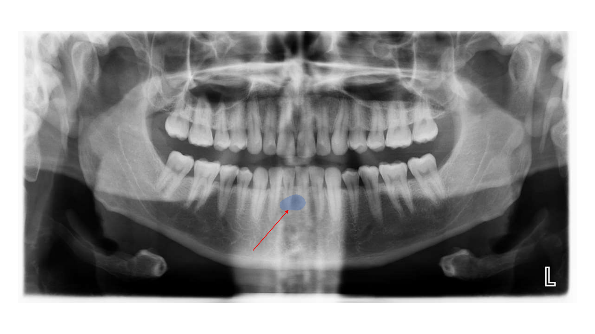
Answer: Lingual foramen / genial tubercles — the lingual foramen is a small midline radiolucency on the lingual cortex of the anterior mandible, transmitting a small branch of the sublingual artery. It often sits within or just below the radiopaque genial tubercles (attachment for genioglossus and geniohyoid). Both are midline-only.
6I. Soft Tissue & Airway on Pano
Soft Tissue / AirwayThe lecture explicitly mandates familiarity with soft-tissue and airway shadows superimposed on a pan (Stuart C. White / Pharoah, p.182 reference). These are real anatomic structures that show up as relative radiolucencies or radiopacities on the pano — not artifacts. Each one is presented on the same baseline pano below.

Answer: Soft palate (and uvula tip) — appears as a slanted soft-tissue radiopacity superimposed over the ramus/maxillary tuberosity area bilaterally, often with a small tongue-of-tissue uvula tip.

Answer: Dorsum of the tongue — soft-tissue shadow of the tongue. If the tongue is NOT placed on the palate, an air space appears between the tongue and palate as a black radiolucent band crossing the maxillary roots (the “palatoglossal air space” artifact).
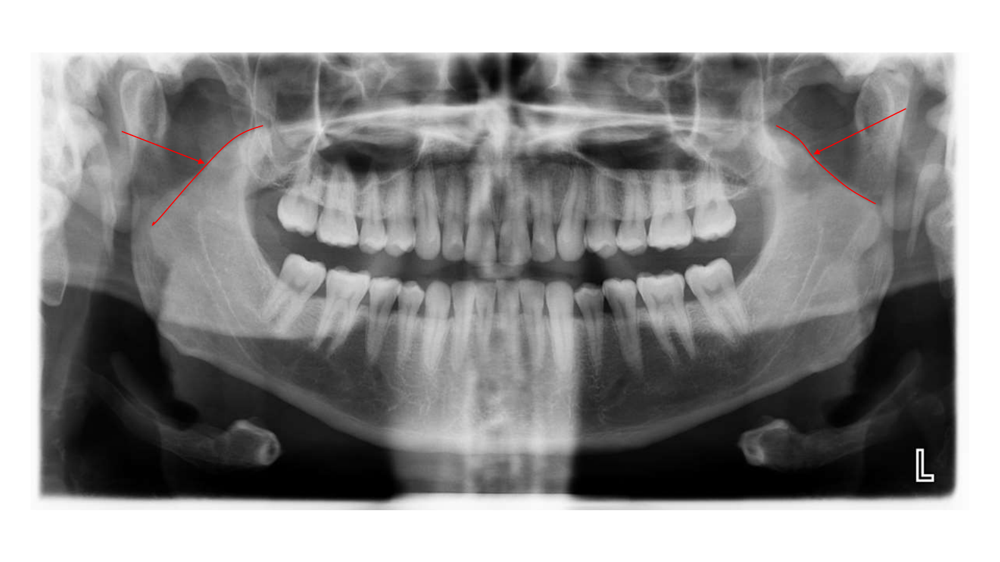
Answer: Nasal airway (nasal cavity airspace) — bilateral radiolucent space inside the nasal cavity, divided by the nasal septum and bordered laterally by the inferior nasal conchae.
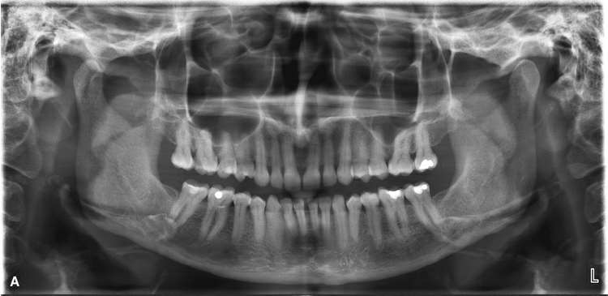
Answer: Nasopharynx — the airspace above the soft palate connecting the nasal cavity to the oropharynx. Visible on a pan as a radiolucent zone behind the maxillary tuberosity, above the soft palate shadow.
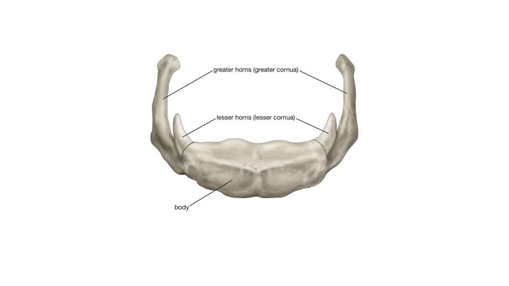
Hyoid bone — sits at the level of C3, suspended by the stylohyoid ligament from the styloid process. On a pan, the greater horns can ghost into the lower mandible region as faint horizontal lines.

Hyoid on a pano: appears as faint horizontal/curved radiopacities below the angle of the mandible bilaterally. Do not confuse with calcified stylohyoid ligament (which is a thin radiopaque line connecting styloid to hyoid).


Answer: Soft palate + uvula — the soft palate appears as a slanted soft-tissue radiopacity hanging from the posterior hard palate; the uvula is the small midline projection at its inferior tip.

Tongue on palate at exposure: eliminates the palatoglossal air space. Without this, a black radiolucent stripe is projected over the maxillary anterior root apices and can mimic apical pathology. Tell every pano patient: “swallow, tongue up to the roof of your mouth, hold it there.”

Answer: Ear lobe (lobule of the auricle — not the entire auricle, which is the whole external ear) — rounded soft-tissue radiopacity projected over the posterior ramus and mastoid region. Has nothing to do with dental anatomy; just helps confirm head positioning was symmetric.


Answer: Velopharynx — the air space at the junction of the soft palate (velum) and the pharynx. Closes during swallowing/speech to seal off the nasopharynx. Important in evaluating airway and cleft palate function.
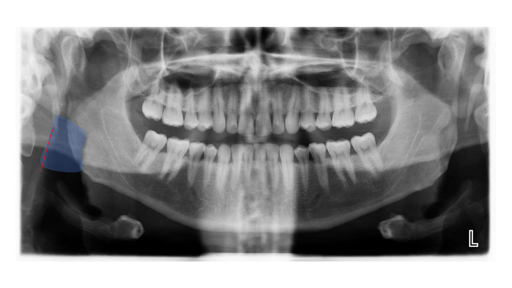
Answer: Oropharynx (oral airway) — the airspace behind the oral cavity, between the soft palate (above) and the epiglottis (below). On a pan it appears as a vertical column of radiolucency in the central image, behind the tongue.

Soft tissue / airway answer key (memorize as a list — Stuart C. White / Pharoah, p.182):
- Hard tissue overlap: middle & inferior nasal turbinates, nasal septum, hard palate.
- Soft tissue: tip of nose, soft palate & uvula, ear lobe, dorsum of tongue.
- Airway columns (radiolucent): nasal airway → nasopharynx → velopharynx → oropharynx (oral airway).
OSCE drill: on any labeled airway question, walk top → bottom: nasal airway → nasopharynx → velopharynx → oropharynx. The arrows always sit just lateral to whichever soft-tissue boundary defines that compartment.
Why airway matters in dentistry: screening for OSA risk, evaluating Mallampati class indirectly on lateral cephs, identifying enlarged adenoids/tonsils in pediatric pans, and recognizing palatoglossal air-space artifacts that mimic pathology.
This is the OSCE source slide. The lecture explicitly warns: "You must be able to identify the structures from the slide on a different panoramic image." Same for the airway slide. Memorize the 30 numbered structures by region, then practice on different pans.
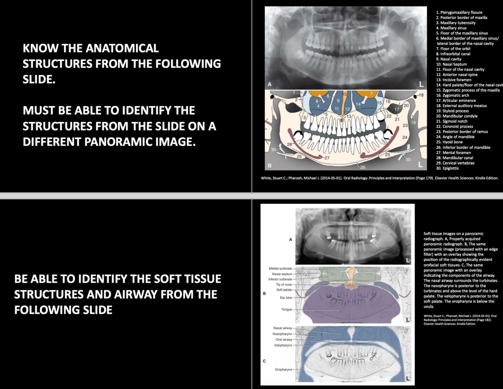
30-structure legend (verbatim from Pharoah, p.179):
Maxilla & midface (1–15)
- Pterygomaxillary fissure
- Posterior border of maxilla
- Maxillary tuberosity
- Maxillary sinus
- Floor of the maxillary sinus
- Medial border of maxillary sinus / lateral border of the nasal cavity
- Floor of the orbit
- Infraorbital canal
- Nasal cavity
- Nasal septum
- Floor of the nasal cavity
- Anterior nasal spine
- Incisive foramen
- Hard palate / floor of the nasal cavity
- Zygomatic process of the maxilla
Cranial base, mandible & neck (16–30)
- Zygomatic arch
- Articular eminence
- External auditory meatus
- Styloid process
- Mandibular condyle
- Sigmoid notch
- Coronoid process
- Posterior border of ramus
- Angle of mandible
- Hyoid bone
- Inferior border of mandible
- Mental foramen
- Mandibular canal
- Cervical vertebrae
- Epiglottis
Soft tissue + airway overlay (Pharoah, p.182):
Soft tissue boundaries (panel B)
- Middle turbinate
- Nasal septum
- Inferior turbinate
- Tip of nose
- Soft palate
- Ear lobe
- Tongue (dorsum)
- Lip line
Airway compartments (panel C)
- Nasal airway — surrounds the turbinates
- Nasopharynx — posterior to turbinates, above hard palate
- Oral airway — oral cavity proper
- Velopharynx — posterior to soft palate
- Oropharynx — below the uvula
OSCE survival rule: the test pano will not be this exact image. Practice on at least 3–5 different pans (the ones in Sections 6A–6E above) and recognize each structure by relative location and shape, not pixel position. The arrow tail points at the structure, never beside it.
Top mix-ups on this exact slide:
- 1 vs 2: #1 (pterygomaxillary fissure) is the radiolucent teardrop; #2 (posterior border of maxilla) is the radiopaque vertical line just anterior to it.
- 4 vs 5 vs 6: sinus body vs floor (curved bottom) vs medial wall (vertical line shared with nasal cavity).
- 14 vs 11: hard palate (#14) is the upper radiopaque band; floor of nasal cavity (#11) is the same band from above — they overlap, so the question depends on which side of the band the arrow lands on.
- 17 vs 22: articular eminence (#17, on temporal bone) vs coronoid process (#22, on mandible) — eminence is fixed, coronoid swings with the jaw.
- 21 vs 23: sigmoid notch (#21, the U-shaped notch between coronoid and condyle) vs posterior border of ramus (#23, the long vertical line behind the condyle).
- 25 vs 30: hyoid (#25) is a discrete bony arc mid-neck; epiglottis (#30) is a soft-tissue leaf shape below the tongue.
7. Panoramic Error Identification — Practice Quad
The lecture closes with this slide: "Identify the errors in the following panos." Four real patient pans, each with a different positioning or technique error. Decision algorithm + per-pano interpretation below.
Walk every pano through these five questions in order. The first abnormal answer is usually the dominant error.
- Occlusal plane shape? Smile (U) = chin down. Frown (∩) = chin up. Flat = OK.
- Anterior teeth size vs posterior? Anteriors enlarged/blurred = patient too far back (posterior to focal trough). Anteriors narrowed = patient too far forward.
- Symmetry L vs R? One side wider/magnified, opposite side narrowed = rotation (head turned toward the narrower side).
- Midline radiopacity over anteriors? Pyramidal/triangular opacity superimposed on anterior teeth = cervical spine ghost (slumping spine).
- Dark V or band over maxillary apices? = tongue not on palate (palatoglossal airspace artifact).
OSCE phrasing tip: name the error, then the radiographic finding that proves it. "Chin up — evidenced by reverse smile of the occlusal plane and hard-palate shadow superimposed on maxillary apices."
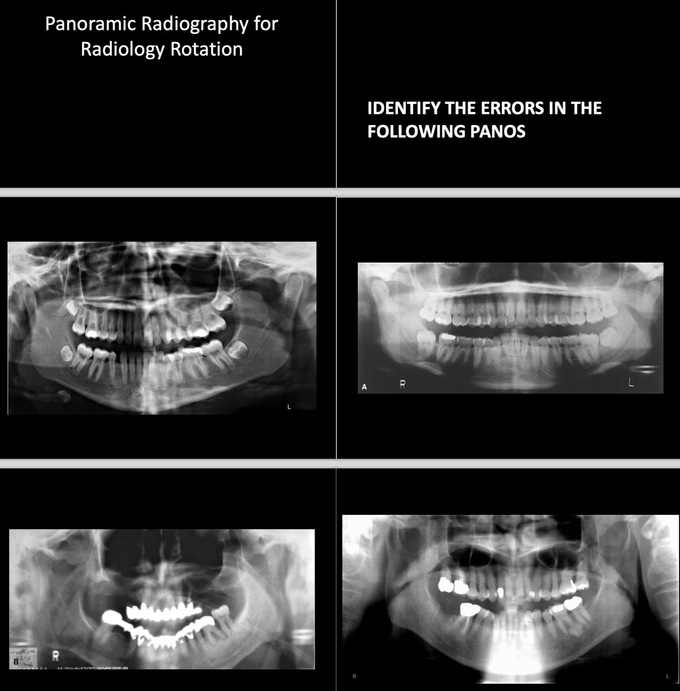
The lecture does not provide an explicit answer slide for these four pans. The interpretations below combine: (a) the positioning errors taught in Section 4 (chin up, chin down, slumping, tilt, rotation), (b) the artifacts taught in lecture (tongue not on palate, ghost images), and (c) the 5-question algorithm in 7A. Where two errors are simultaneously present, the dominant finding is listed first.
What you see:
- Occlusal plane curves upward at the periphery (U-shape, exaggerated "smile curve").
- Mandibular anterior teeth appear foreshortened, crowded, and blurred.
- Mandibular condyles ride high and are cut off at the top edge of the film — the canonical chin-down sign.
- Maxillary anteriors lack elongation; no hard-palate band across the apices (rules out chin up).
Algorithm walk-through:
- Q1 (occlusal plane): exaggerated U-smile → chin down.
- Confirm with condyle position: cut off at the top of the image = chin down (chin up pushes condyles laterally toward the sides, not the top).
- Q2–5: no focal-trough drift, no ghost spine, no palatoglossal artifact.
Answer: Chin down (Frankfort plane angled nose-down). Chin tucked toward the chest. The mandibular arch is driven superiorly, condyles ride off the top of the image, mandibular anteriors foreshorten, and the occlusal plane traces an exaggerated U-shaped smile. Reposition: raise the chin until the Frankfort plane is parallel to the floor (or use the chin-rest indicator line).
One-liner: "Exaggerated smile (U) + condyles cut off top + foreshortened mand anteriors = chin down."
What you see:
- Occlusal plane is flatter than ideal — mild reverse smile (subtle frown).
- Maxillary anterior crowns slightly stretched vertically.
- Image is otherwise reasonably positioned (both condyles symmetric, hard palate not overly superimposed).
- "A·R" / "L" markers visible at film edges (orientation labels, not part of the error).
Algorithm walk-through:
- Q1: mild ∩-shape → mild chin up.
- Q3: arches grossly symmetric, so rotation is unlikely.
- No cervical ghost or palatoglossal artifact.
Answer: Mild chin up (Frankfort plane slightly tilted upward). A subtler version of Pano #1 — loss of the normal gentle smile curve and slight elongation of upper anteriors. Diagnostic image overall, but not optimal. Reposition the chin slightly down for a true Frankfort-parallel exposure.
Don't overcall this one. The pano is largely diagnostic — the test point is recognizing that even subtle loss of the smile curve is a clue to chin position. If forced to pick one error, "mild chin up" is the safest answer.
What you see:
- Dense radiopaque pyramidal/triangular shadow superimposed across the anterior maxilla and mandible.
- Anterior teeth indistinct, magnified, and overlapped.
- Pano outline is distorted and narrow — mandible appears compressed.
- "R" marker visible at lower-left (orientation label).
Algorithm walk-through:
- Q4: midline pyramidal opacity over anteriors → cervical spine ghost.
- Q2: anterior teeth distorted/magnified → patient drifted out of focal trough.
- The two errors are causally linked: when the spine slumps, the head pivots back and the anteriors slide out of the focal trough.
Answer: Slumping of the cervical spine (with secondary loss of focal-trough position). The classic "ghost spine" — densely calcified cervical vertebrae project a triangular radiopacity across the anterior region, obscuring the maxillary and mandibular incisors. Reposition: have the patient stand tall, "swallow and lift the chest," then re-bite the bite block with spine straight. (Some authors call this the "Egyptian posture": back straight, head pulled forward, like an Egyptian wall painting.)
One-liner: "Triangular radiopacity over anterior teeth = spine ghost from slumping."
What you see:
- Occlusal plane shows an exaggerated upward smile (U-shape) — the dominant positioning error is chin down.
- Mandibular condyles ride high and are cut off at the top of the image (or pushed far superiorly).
- Mandibular anteriors are foreshortened and crowded against the lower border of the film.
- Secondary error: a dark radiolucent V/band crosses the maxillary apices — the palatoglossal airspace from tongue not pressed against the palate.
Algorithm walk-through:
- Q1: occlusal curve = exaggerated U smile → chin down (dominant); condyles riding off the top edge confirms it.
- Q5: dark band/V over maxillary apices → palatoglossal airspace = tongue not on palate (secondary).
- Two coexisting errors — name both.
Answer: Chin down (dominant) + Tongue not on palate (secondary). The Frankfort plane is angled nose-down, producing the U-smile occlusal curve, foreshortened mandibular anteriors, and condyles cut off at the top of the image. Simultaneously, the dorsum of the tongue is not pressed against the hard palate, so the palatoglossal air gap projects as a dark radiolucent V across the maxillary apices — this mimics periapical pathology. Reposition: raise the chin to Frankfort-parallel AND coach the patient to "place the tongue against the roof of the mouth and keep it there" before exposure.
Do NOT mistake the dark V for: bilateral periapical lesions, generalized bone loss, or sinus pathology. The give-away is the sharp linear/V-shaped border crossing anatomy at a non-anatomical level. And do NOT call this image "just tongue off palate" — the chin-down error is the dominant geometric finding and must be named first.
One-liner: "Exaggerated smile + condyles off top = chin down; dark V over max apices = tongue off palate (two errors)."
| Pano | Dominant Error | Telltale Finding | Fix |
|---|---|---|---|
| #1 Top-Left | Chin down | Exaggerated smile (U) + condyles cut off top + foreshortened mand anteriors | Raise chin to Frankfort-parallel |
| #2 Top-Right | Mild chin up | Mild flat/reverse smile, slight max-anterior elongation | Drop chin slightly to true Frankfort horizontal |
| #3 Bottom-Left | Slumping spine | Triangular cervical ghost over anteriors | Stand tall, lift chest ("Egyptian posture") |
| #4 Bottom-Right | Chin down + tongue not on palate | Exaggerated smile (U) + condyles high; dark V/band over max apices | Raise chin to Frankfort-parallel; coach tongue to palate |
Master pearl: all five lecture-named errors (chin up, chin down, slumping, tilt, rotation) plus the tongue-on-palate artifact account for >95% of pano OSCE questions. If you can name the error and the radiographic finding that proves it in one sentence, you pass.
| Error | Cause | Radiographic Sign |
|---|---|---|
| Chin up | Frankfort plane tipped nose-up | ∩ frowning curve, hard palate projects over max apices, condyles pushed laterally toward or off the sides of the image |
| Chin down | Frankfort plane tipped nose-down | U exaggerated smile, mandibular anteriors foreshortened and blurred, condyles cut off at the top of the image (riding superiorly) |
| Slumping | Patient hunched, spine rounded | Triangular radiopaque cervical ghost across anteriors |
| Tilt (head tilted to one side) | Midsagittal not vertical | Occlusal plane tilts; one side rides higher than the other |
| Rotation (head turned) | Midsagittal off-center, head turned L or R | One side magnified/wider, contralateral side narrowed; ramus widths asymmetric |
| Tongue off palate | Dorsum not pressed against hard palate | Dark radiolucent V/band across maxillary apices (palatoglossal airspace) |
Memory device: "Up frowns, down smiles, slump ghosts, tilt slants, rotate stretches, tongue darkens."